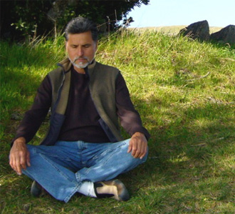

Who is Wm Guillermo Anyway?

“My strong interest and desire is to share my passion for cultivating and sustaining health, joy and well-being in one’s body, home and life.”
L.A. Roots
Wm Guillermo Ortiz was raised in Los Angeles, the second of seven sons, to a latino working class family with roots in northern Mexico. He and his brothers were expected to contribute to their father’s moving business and from an early age he was inculcated with a respect and appreciation for “work well-done.”
Growing up in the 50’s and 60’s, his love of rock’ n roll and the expressive forms of dance that arose gave him an outlet and channel for his restless energy. Inspired by the life of Jim Thorpe, native American runner, he excelled in cross-country running.
From 1968-72, during the Vietnam war, he served in the US Navy as a medical and neuro-psychiatric corpsman. It was during this time he saw first-hand the devastating effects of war and participated in several anti-war gatherings.
Upon his discharge while working at a local mental health center he was introduced to tai chi ch’uan , the Chinese art of health and self-defense. Under the guidance of his teacher Marshall Ho’o, he began a life long practice which continues to inform and offer guidance to a path of embodiment.
He continued in the mental health field for the next ten years mostly at Cedars-Sinai and the Neuro-Psychiatric Institute at UCLA. It was there in 1981 he met Elena Avila, who became a close friend and would eventually become his teacher in curanderismo.

Moving and Shaking It
1984, under the auspices of the Institute for Educational Therapy, he and fellow teacher Jim Spira traveled to Italy to conduct a month long seminar in bodywork, tai chi ch’uan, dance and meditation. Out of this initial workshop , he eventually established connections to work in Denmark, Germany, Austria and Switzerland. While in Europe, he had the opportunity to meet and study with Buddhist movement teacher Prapto Suryodharmo. He travelled to Java living and studying for 3 months refining his movement skills in a spiritual context.
Tile Work
It was in 1985 while visiting his brother, photographer Gilbert Ortiz in New York that he was introduced to tile and stone work. What began a two week visit led to a six month period of working with Italian marble. When he returned to the Bay Area, he pursued his desire to learn the craft with architect and tile contractor Roberto Zamora. In 1993, he completed his certification and started his own tile company.
Xochipilli
Throughout the late 80’s, he became involved with the Sons of Orpheus in the mytho-poetic men’s movement.
In 1992, along with fellow Chicano artist Juan Domingo, poet/activist Rafael J. Gonzalez & diversity trainer Roberto Almanzan founded Xochipilli, a latino men’s ritual group. Xochipilli uses art, ritual and performance to address socially relevant issues.
Ministry
At the advent of the Iraqi war in 2003, compelled to step up his peace efforts, he commenced a Master’s of Divinity program with the Seminary for Spiritual Peacemaking. Ordained in 2006, he conducts weddings and offers public ceremonies with an emphasis on embodying peace.
Curandersimo
It was in 2005 that he took on an official apprenticeship with Elena Avila, curandera and author of Woman Who Glows in the Dark. He completed his training in November 2010 with an initiating ceremony conducted in Mexico City.
Woven through all his work is a strong desire for excellence, precision and attention to detail. His love of physical movement allows him to fully engage in his craft and his passion for healing informs his peace ministry and work in curanderismo.
“My strong interest and desire is to share my passion for cultivating and sustaining health, joy and well-being in one’s body, home and life.”